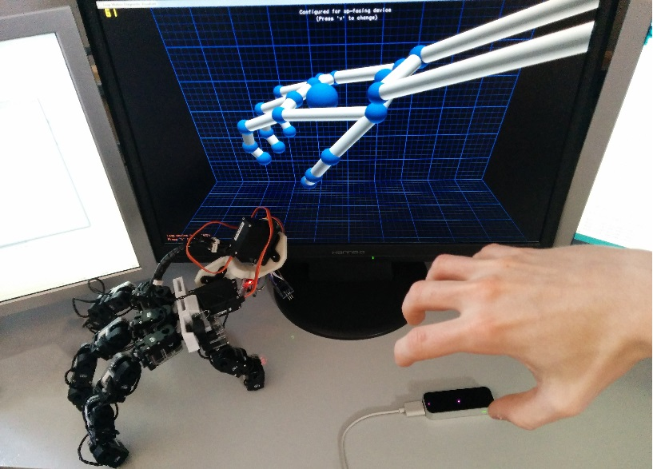
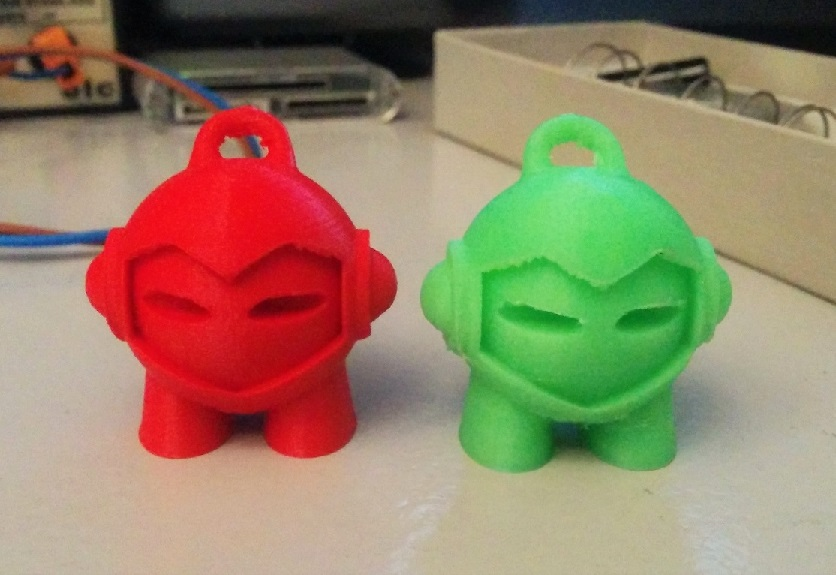

- Tanguy DEMME
- Age: 21 ans
- Etudiant ingénieur
- Ecole: ESIEA
- Filière: Informatique
- Spécialitée: Robotique
Bonjour et bienvenu sur mon portfolio !
Ce dossier présente mon parcours et quelques-uns des projets que j'ai réalisés. Comme vous pourrez le voir, mon domaine de prédilection est la robotique, c’est une passion qui me permet d'allier créativité, informatique et électronique.
N'hésitez pas à me contacter via le formulaire en bas de page pour tout renseignement.
Après un BAC S option Sciences de l'ingénieur j'ai intégré l'ESIEA. Il s'agit d'une formation d'ingénieur en 5 ans, dans le domaine de l'informatique et l'électronique. Aujourd'hui en 5ème année (Cycle master 2), ma formation touche à sa fin.
Entre temps j'ai effectué plusieurs stages dans des entreprises de toutes tailles. De la PME Synapticon au grand groupe Dassault Systèmes, en passant par ma propre start-up. J'ai également réalisé quelques missions en tant que freelance dans le but de financer mes projets et mes études.
Pour plus de détails, je vous invite à consulter mon CV ou mon profil LinkedIn :

Expériences
Projets
Les réalisations présentées ici viennent de mes projets personnels ou de missions que j'ai effectuées pour des entreprises.
Mon dernier projet en date : un hexapode d'environ 50 cm.
Pour sa morphologie et la conception des pièces je me suis inspiré de la fourmi.
Il possède 24 degrés de liberté (4 par pattes)
J'ai réalisé plusieurs mains robotiques, La plus aboutie est capable de reproduire en temps réel les mouvements de chaque phalange d'une main humaine grâce à un LeapMotion.
 Chaque articulation est motorisée et independante. J'ai exposé ce projet à la Geekopolis 2014.J'utilise l'impression 3D pour mes projets depuis maintenant 5 ans,
Ce qui m'a permis d'acquérir de l'expérience sur de nombreuses technologies d'impression différentes.

En ce moment j'utilise mon Ultimaker2 et une imprimante de type RepRap de ma conception. Je propose aussi un service de modélisation et d'impression à la demande.